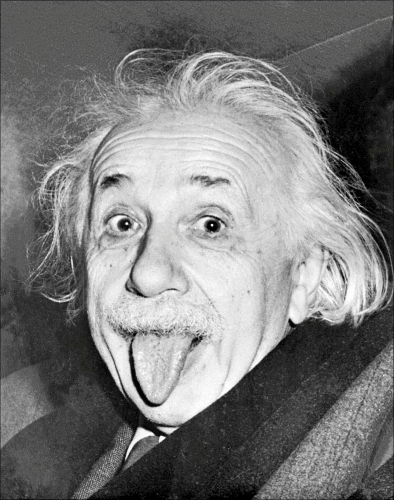
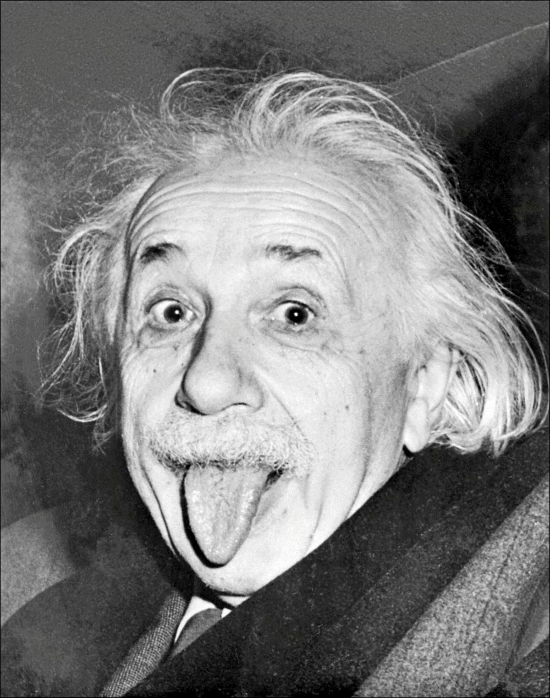
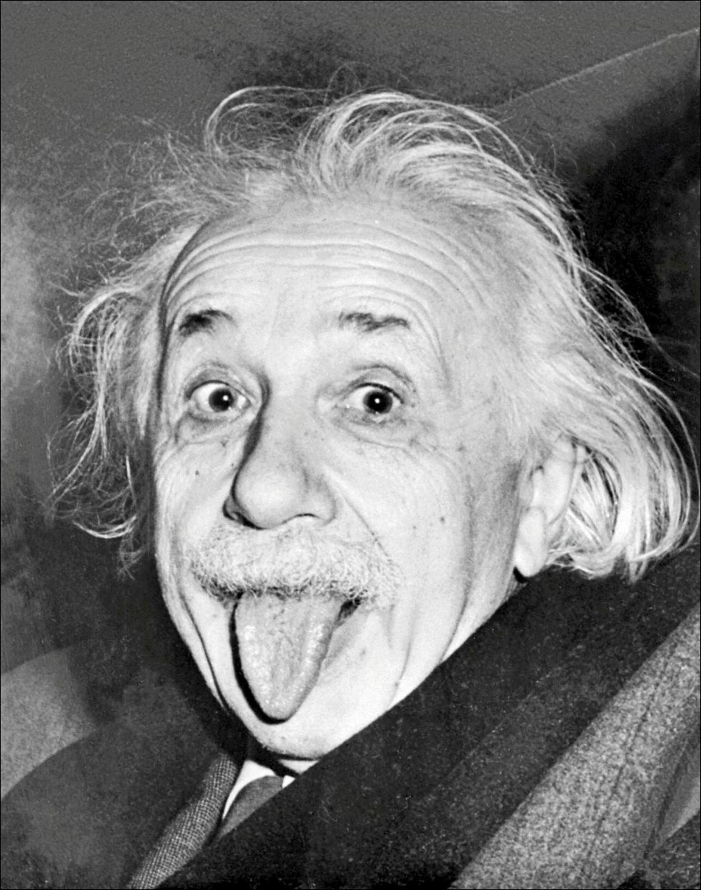

La dyslexie est un trouble de
l'apprentissage qui rend la lecture et l'écriture plus difficiles, sans affecter l'intelligence.
Elle est souvent détectée à l'école, lorsqu'un enfant a des difficultés par rapport à ses camarades,
et un spécialiste peut la diagnostiquer. Bien que la dyslexie pose des défis, elle offre aussi des avantages,
comme une pensée créative et des compétences en résolution de problèmes. Aujourd'hui, LinkdIn reconnaît la pensée dyslexique
comme un atout, valorisant les talents uniques des presonnes dyslexiques dans le monde professionnel.
